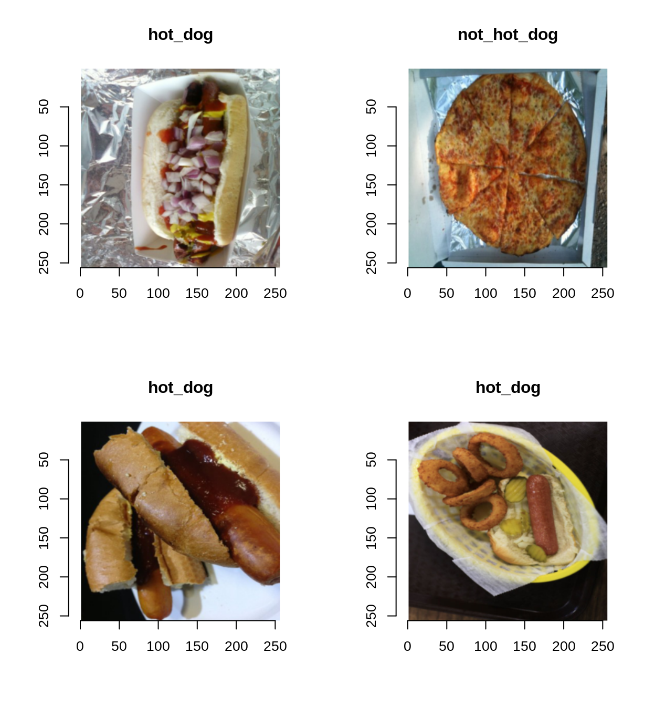

Neste post iremos testar o uso do Pytorch no R com o auxílio do pacote reticulate, que permite a utilização de bibliotecas do Python diretamente no R. Isso ajuda a evitar (em parte) aquela disputa entre o R e o Python, uma vez que você pode usar o melhor de cada. Como exemplo, iremos treinar uma classificador de imagens que é a base do aplicativo Seefood que fez fama no seriado Silicon Valley da HBO.
O Python é a principal linguagem hoje para machine learning, e isso, infelizmente, não tem discussão. Contudo, com o pacote reticulate, é possível utilizar diretamente as biliotecas do Python no R sem grandes problemas. Isto é, uma vez que você tenha instalado tudo que é necessário. A função install_miniconda() ajuda no processo. No entanto, é preciso também instalar o Pytorch no ambiente que será utilizado pelo reticulate. Na minha máquina (e o padrão é assim), utilizo o ambiente r-reticulate.
Para exemplificar o uso do Pytorch, neste post será treinado um modelo que dá origem a aplicação Seefood que ficou famosa no seriado Silicon Valley da HBO. Esse modelo consiste em classificar uma imagem de comida em “hot dog” ou “not hot dog”. Em resumo, conforme essa wiki, a história pode ser resumida da seguinte forma:
SeeFood was a pitch made up in the conference room by Erlich. It was supposed to be Shazam for food, but development stopped after the algorithm could only detect hot dogs. Erlich sold his equity before SeeFood was bought by Periscope for 30 million dollars making Jian-Yang “a very rich man”.
O código desse post segue em grande parte o tutorial disponível no portal do Pytorch.
Aqui estão listados os pacotes do R e bibliotecas do Python que iremos utilizar neste post. As biblotecas do Python que serão utilizadas são: torch, torchvision, numpy e copy.
library(reticulate)
library(imager)
library(glue)
library(tidyverse)
library(zeallot)
# Bibliotecas e módulos do python
py <- import_builtins()
torch <- import("torch")
torchvision <- import("torchvision")
np <- import("numpy")
copy <- import("copy")
transforms <- torchvision$transforms
datasets <- torchvision$datasets
models <- torchvision$models
optim <- torch$optim
nn <- torch$nn
F <- torch$nn$functionalOs dados para esse post estão disponívels no Kaggle neste link. Foram utilizadas as imagens da pasta seefood. As imagens estão incialmente separadas apenas em treino e teste. Iremos, adicionalmente, criar a pasta validação e copiar algumas imagens da pasta de teste para essa nova pasta.
data_dir <- "../../dados/seefood"
if(!dir.exists(file.path(data_dir, "valid"))){
dir.create(file.path(data_dir, "valid"))
dir.create(file.path(data_dir, "valid/hot_dog"))
dir.create(file.path(data_dir, "valid/not_hot_dog"))
classes <- c("hot_dog", "not_hot_dog")
for(classe in classes){
images <- list.files(file.path(data_dir, "test", classe))
set.seed(39031)
images <- sample(images, 75)
for(image in images){
file.copy(
from = file.path(file.path(data_dir, "test", classe, image)),
to = file.path(file.path(data_dir, "valid", classe, image))
)
file.remove(file.path(file.path(data_dir, "test", classe, image)))
}
}
}Antes de definir propriamente os dataloaders, o código abaixo crias os “transforms” que na prática consistem em pré-processamentos das imagens. Apesar de existir uma enorme variedade de possibilidades, no código abaixo apenas redimensionamos as imagens e normalizamos os pixels para que eles assumam valores entre -1 e 1.
data_trasnforms <- list(
train = transforms$Compose(
list(
transforms$Resize(c(256L, 256L)),
transforms$ToTensor(),
transforms$Normalize(c(0.5, 0.5, 0.5), c(0.5, 0.5, 0.5))
)
),
valid = transforms$Compose(
list(
transforms$Resize(c(256L, 256L)),
transforms$ToTensor(),
transforms$Normalize(c(0.5, 0.5, 0.5), c(0.5, 0.5, 0.5))
)
),
test = transforms$Compose(
list(
transforms$Resize(c(256L, 256L)),
transforms$ToTensor(),
transforms$Normalize(c(0.5, 0.5, 0.5), c(0.5, 0.5, 0.5))
)
)
)O código abaixo cria os dataloaders, que são os objetos que fornecerão os dados ao modelo que será treinado.
# Dataloaders ---------------------------------------------------------------
sets <- c("train", "valid", "test")
image_datasets <- map(sets, ~ {
datasets$ImageFolder(
file.path(data_dir, .x),
data_trasnforms[[.x]]
)
}) %>%
setNames(sets)
dataloaders <- map(sets, ~{
torch$utils$data$DataLoader(
image_datasets[[.x]],
batch_size = 8L,
shuffle = TRUE,
num_workers = 4L
)
}) %>%
setNames(sets)
dataset_sizes <- map_dbl(sets, ~ {
py$len(image_datasets[[.x]])
}) %>%
setNames(sets)
print(dataset_sizes)
train valid test
498 150 350 Abaixo mostramos uma amostra das imagens que formam esse dataset.
class_names <- image_datasets[['train']]$classes
# Visualizando algumas imagens -----------------------------------------------
iter_train <- py$iter(dataloaders[["train"]])
c(images, labels) %<-% iter_next(iter_train)
images <- images$numpy()
labels <- labels$numpy()
labels <- class_names[labels + 1]
layout(matrix(1:4, 2, 2))
for(i in 1:4){
images[i, , , , drop = FALSE] %>%
aperm(c(3, 4, 1, 2)) %>%
as.cimg() %>%
plot(main = labels[i])
}
O processo de treinamento é customizado. Isto é, define-se cada passo do processo na função de treinamento (train_model). Apesar de ser a minha primeira experiência com o Pytorch, achei o processo bem intuitivo e de fácil definição, sendo similar ao processo de treinamento customizado do tensorflow. Basicamente, o processo é o seguinte:
Ao final de cada “epoch”, são computados os valores finais da função de perda e da acurácia para os dados de treino e de validação.
train_model <- function(model, criterion, optimizer, scheduler, num_epochs = 25){
# Guarda os valores dos pesos e da acurácia para a "melhor" epoch
best_model_wts = copy$deepcopy(model$state_dict())
best_acc = 0
for (epoch in 1:num_epochs) {
cat(glue("Epoch {epoch}/{num_epochs}"), "\n")
cat("-----------------------------\n")
for (phase in c("train", "valid")) {
if (phase == "train") {
model$train()
} else {
model$eval()
}
running_loss <- 0
running_corrects <- 0
iter_data <- py$iter(dataloaders[[phase]])
while (TRUE) {
data <- iter_next(iter_data)
if (is.null(data)) {
break
}
inputs <- data[[1]]
inputs <- inputs$to(device)
labels <- data[[2]]
labels <- labels$to(device)
optimizer$zero_grad()
with(torch$set_grad_enabled(phase == "train"), {
outputs <- model(inputs)
preds <- torch$max(outputs, 1L)$indices
loss <- criterion(outputs, labels)
# backward + optimize only if in training phase
if (phase == "train") {
loss$backward()
optimizer$step()
}
})
running_loss <- running_loss + loss$item() * inputs$size(0L)
running_corrects <- running_corrects + sum(preds$cpu()$numpy() == labels$cpu()$numpy())
}
if (phase == "train") {
scheduler$step()
}
epoch_loss <- running_loss / dataset_sizes[[phase]]
epoch_acc <- running_corrects / dataset_sizes[[phase]]
cat(glue("{phase} Loss: {round(epoch_loss,4)} Acc.: {round(epoch_acc, 4)}"), "\n")
if (phase == "valid" & epoch_acc > best_acc) {
best_acc <- epoch_acc
best_model_wts <- copy$deepcopy(model$state_dict())
}
}
}
model$load_state_dict(best_model_wts)
cat("-----------------------------\n")
cat(glue("Best val Acc: {round(best_acc, 4)}"), "\n")
return(model)
}Aqui utilizamos uma técnica conhecida como Transfer Learning. Isto é, utilizamos um modelo que foi pré-treinado em uma base maior e que já “aprendeu” a extrair features das imagens para auxiliar no treinamento do nosso modelo. Na prática iremos só redimensionar a última camada para que o output seja de dimensão 2 (número de classes da nossa base) e treinar o modelo mais um pouco para que ele se ajuste melhor à nossa tarefa.
model_ft <- models$resnet34(pretrained = TRUE)
num_ftrs <- model_ft$fc$in_features
model_ft$fc <- nn$Linear(num_ftrs, 2L)
device <- torch$device("cuda:0")
model_ft <- model_ft$to(device)
criterion <- nn$CrossEntropyLoss()
optimizer_ft = optim$AdamW(model_ft$parameters(), lr = 5e-5)
lr_scheduler <- optim$lr_scheduler
exp_lr_scheduler = lr_scheduler$StepLR(optimizer_ft, step_size = 5L, gamma = 0.1)
model_ft <- train_model(
model_ft,
criterion,
optimizer_ft,
exp_lr_scheduler,
num_epochs = 25L
)
Epoch 1/25
-----------------------------
train Loss: 0.4035 Acc.: 0.8173
valid Loss: 0.2337 Acc.: 0.9133
Epoch 2/25
-----------------------------
train Loss: 0.1059 Acc.: 0.9659
valid Loss: 0.2374 Acc.: 0.9133
Epoch 3/25
-----------------------------
train Loss: 0.1241 Acc.: 0.9518
valid Loss: 0.3299 Acc.: 0.8867
Epoch 4/25
-----------------------------
train Loss: 0.1034 Acc.: 0.9618
valid Loss: 0.3381 Acc.: 0.8867
Epoch 5/25
-----------------------------
train Loss: 0.1147 Acc.: 0.9659
valid Loss: 0.27 Acc.: 0.9067
Epoch 6/25
-----------------------------
train Loss: 0.0848 Acc.: 0.9598
valid Loss: 0.2389 Acc.: 0.9133
Epoch 7/25
-----------------------------
train Loss: 0.0744 Acc.: 0.9719
valid Loss: 0.2367 Acc.: 0.9067
Epoch 8/25
-----------------------------
train Loss: 0.0636 Acc.: 0.9819
valid Loss: 0.2176 Acc.: 0.9267
Epoch 9/25
-----------------------------
train Loss: 0.0528 Acc.: 0.988
valid Loss: 0.2287 Acc.: 0.9133
Epoch 10/25
-----------------------------
train Loss: 0.0298 Acc.: 0.99
valid Loss: 0.2217 Acc.: 0.92
Epoch 11/25
-----------------------------
train Loss: 0.0408 Acc.: 0.9859
valid Loss: 0.2257 Acc.: 0.9133
Epoch 12/25
-----------------------------
train Loss: 0.0974 Acc.: 0.9679
valid Loss: 0.2261 Acc.: 0.92
Epoch 13/25
-----------------------------
train Loss: 0.0506 Acc.: 0.9859
valid Loss: 0.2233 Acc.: 0.92
Epoch 14/25
-----------------------------
train Loss: 0.0674 Acc.: 0.9739
valid Loss: 0.2281 Acc.: 0.92
Epoch 15/25
-----------------------------
train Loss: 0.0396 Acc.: 0.988
valid Loss: 0.2207 Acc.: 0.9133
Epoch 16/25
-----------------------------
train Loss: 0.0513 Acc.: 0.988
valid Loss: 0.2126 Acc.: 0.9267
Epoch 17/25
-----------------------------
train Loss: 0.0468 Acc.: 0.9859
valid Loss: 0.2252 Acc.: 0.9133
Epoch 18/25
-----------------------------
train Loss: 0.0724 Acc.: 0.9699
valid Loss: 0.2303 Acc.: 0.9133
Epoch 19/25
-----------------------------
train Loss: 0.0806 Acc.: 0.9679
valid Loss: 0.2234 Acc.: 0.92
Epoch 20/25
-----------------------------
train Loss: 0.0859 Acc.: 0.9679
valid Loss: 0.2175 Acc.: 0.9133
Epoch 21/25
-----------------------------
train Loss: 0.0492 Acc.: 0.9839
valid Loss: 0.2034 Acc.: 0.9333
Epoch 22/25
-----------------------------
train Loss: 0.063 Acc.: 0.9779
valid Loss: 0.2182 Acc.: 0.9267
Epoch 23/25
-----------------------------
train Loss: 0.0321 Acc.: 0.992
valid Loss: 0.2305 Acc.: 0.9067
Epoch 24/25
-----------------------------
train Loss: 0.0453 Acc.: 0.99
valid Loss: 0.2087 Acc.: 0.9267
Epoch 25/25
-----------------------------
train Loss: 0.0421 Acc.: 0.99
valid Loss: 0.2194 Acc.: 0.9133
-----------------------------
Best val Acc: 0.9333 Agora vamos ver como o nosso classificador se sai:
iter_test <- py$iter(dataloaders[["test"]])
c(images, labels) %<-% iter_next(iter_test)
images <- images$to(device)
preds <- model_ft(images)
preds <- torch$max(preds, 1L)$indices
preds <- preds$cpu()$numpy()
preds <- class_names[preds + 1]
images <- images$cpu()$numpy()
layout(matrix(1:4, 2, 2))
for(i in 1:4){
images[i, , , , drop = FALSE] %>%
aperm(c(3, 4, 1, 2)) %>%
as.cimg() %>%
plot(main = glue("Predição: {preds[i]}"))
}
test_acc <- 0
running_corrects <- 0
invisible(model_ft$eval())
N <- dataset_sizes[["test"]]
iter_data <- py$iter(dataloaders[["test"]])
with(torch$no_grad(), {
while (TRUE) {
data <- iter_next(iter_data)
if (is.null(data)) {
break
}
inputs <- data[[1]]
inputs <- inputs$to(device)
labels <- data[[2]]
labels <- labels$to(device)
outputs <- model_ft(inputs)
preds <- torch$max(outputs, 1L)$indices
running_corrects <- running_corrects + sum(preds$cpu()$numpy() == labels$cpu()$numpy())
}
cat("-----------------------------\n")
cat(glue("Test Acc: {round(running_corrects/N, 4)}"), "\n")
})
-----------------------------
Test Acc: 0.94 Nosso modelo conseguiu atingir a acurácia de 94,0%!
Com isso, fechamos esse post! A ideia era mostrar que pode-se usar facilmente uma biblioteca em Python no R com a ajuda do reticulate. Dessa forma, não precisamos nos limitar a uma linguagem única e aproveitar o melhor de cada!
For attribution, please cite this work as
Alencar (2020, April 27). Fulljoin: Usando o Pytorch no R: Treinando o Seefood. Retrieved from https://www.fulljoin.com.br/posts/2020-04-27-usando-o-pytorch-no-r-treinando-o-seefood/
BibTeX citation
@misc{alencar2020usando,
author = {Alencar, Paulo Felipe},
title = {Fulljoin: Usando o Pytorch no R: Treinando o Seefood},
url = {https://www.fulljoin.com.br/posts/2020-04-27-usando-o-pytorch-no-r-treinando-o-seefood/},
year = {2020}
}